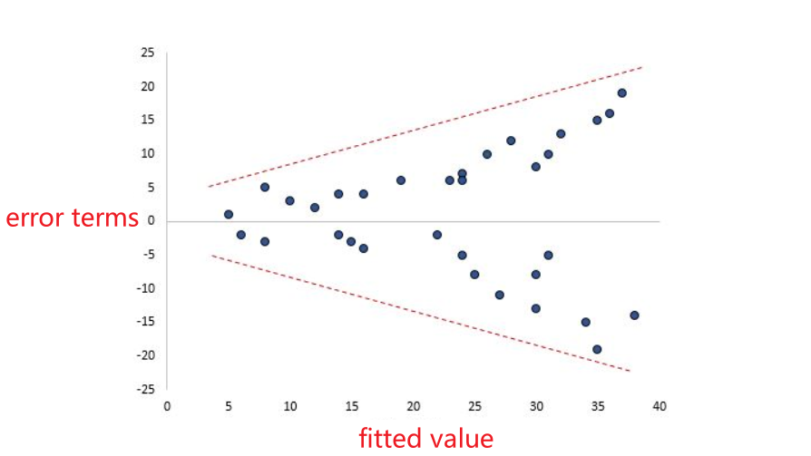
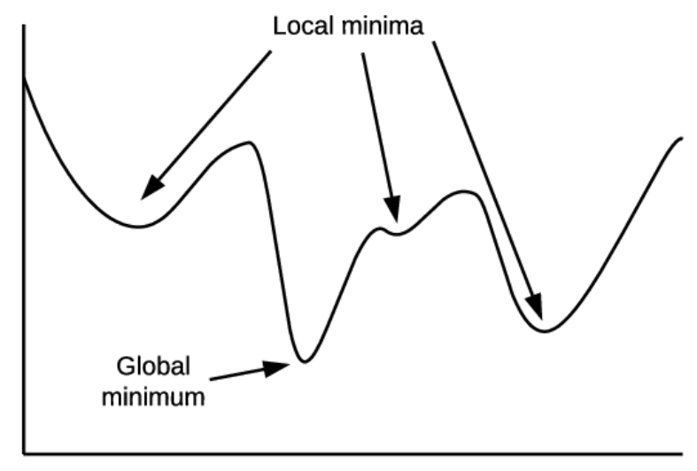

# Linear Regression Overview
Regression is a statistical method used in finance, investing, and other disciplines that attempts to determine the strength and character of the relationship between one dependent variable (usually denoted by Y) and a series of other variables (known as independent variables).
回归模型是一种预测性的建模技术。回归模型基于统计方法，尝试研究一个因变量 （目标值）和其他一系列自变量 （预测器）之间关系的强弱与特征。回归广泛应用于金融、投资以及其他相关学科中。
Linear Regression is a machine learning algorithm based on supervised learning.
线性回归是一种有监督的机器学习算法（有监督学习）。
Linear regression performs the task to predict a dependent variable value () based on a given independent variable (). So, this regression technique finds out a linear relationship between (input) and (output). Hence, the name is Linear Regression.
线性回归基于给定的自变量（输入值） 来预测（输出值） 的值。因此线性回归应当找到 与 间的线性关系。
# Assumptions of Linear Regression
Before we conduct linear regression, we must first make sure that four assumptions are met:
在使用线性回归的方法前，我们首先给出假设：
- There should exist a linear relationship between the independent variable () and dependent variable ().
自变量 和因变量 之间，应该存在某种线性关系。 - The error terms should be independent, even in time series data.
误差项之间应该是独立的。即使是时间序列的数据，残差之间也相互独立。 - The error terms should have constant variance at every level of . This is called homoskedasticity.
不论 x 取值如何，误差项的方差应该是常数。这个性质叫做同方差性。 - The error terms of the model should be normally distributed.
这个模型的误差项，应该服从正态分布。
The formula for error terms in linear regression is straightforward: error = observed – predicted
线性回归中误差项的计算公式如下：误差项 = 的观测值（或认为实际值）- 的预测值
If one or more of these assumptions are violated, then the results of our linear regression may be unreliable or even misleading.
如果上述假设不能够全部满足，那么这个回归分析的结果就不可信，甚至有可能产生误导。
If you create a scatter plot of values for and and see that there is not a linear relationship between and , we have the following two choices:
你可以创建一个关于 和 的散点图。如果自变量 和因变量 之间不存在线性关系，我们可以有以下两种处理办法：
- Apply a nonlinear transformation to the independent and/or dependent variable. Common examples include taking the log, the square root, or the reciprocal of the independent and/or dependent variable.
对自变量和（或）因变量进行一个非线性变换。通常可以考虑的是取对数，开平方根或者去倒数等等。 - Introduce another independent variable to the model. For example, if the plot of vs. has a parabolic shape then it might make sense to add as an additional independent variable in the model.
在模型中引入另一个随机变量。例如，如果在散点图中， 与 呈现一种抛物线形状的关系，那么我们在模型中加入 这么一个随机变量，就很有可能有奇效。
Ideally, we don’t want there to be a pattern among consecutive errors. For example, errors shouldn’t steadily grow larger as time goes on.
理想情况下，我们不希望连续的误差之间存在关系。比如说，误差项的值不应该随着时间流逝而增大。
If the assumption of independent errors is violated, we can fix it though these methods:
如果误差项的独立性条件没法满足，那么我们可以考虑以下几个方法去改进它：
- For positive serial correlation, consider adding lags of the dependent and/or independent variable to the model.
如果误差项序列呈正相关性，可以考虑在模型中添加自变量或因变量的滞后变量。 - For negative serial correlation, check to make sure that none of your variables are overdifferenced.
如果误差项序列呈负相关性，那么应该确保模型中不存在变量被过度差分。 - For seasonal correlation, consider adding seasonal dummy variables to the model.
如果误差项呈现季节性变化，那么应该添加虚拟的季节性变量。
If the varience of the error terms in the linear regression model are nonconstant, the error terms are said to suffer from heteroscedasticity.
如果线性回归模型中的误差项方差不恒定，那么称这些误差项具有异方差性。
You can then create a scatterplot that shows the fitted values of the model and the error terms of those fitted values. his “cone” shape is a classic sign of heteroscedasticity:
我们以拟合值作为横坐标，以对应的误差项的值作为纵坐标，画出散点图。如下图所示的 “锥形” 散点图，就是异方差性的一个典型代表。

How to fix heteroscedasticity?
如何解决异方差性？
- Transform the dependent variable.One common transformation is to simply take the log of the dependent variable.
转换因变量的形式。一种常用的转换方法是取对数。 - Redefine the dependent variable. One common way to redefine the dependent variable is to use a rate, rather than the raw value.
重新定义自变量。常用比例关系来取代绝对数量。 - Use weighted regression. This type of regression assigns a weight to each data point based on the variance of its fitted value.
使用加权线性回归。这种回归根据每个数据点的拟合值的方差为其分配权重。
We have to make sure the error terms are normally distributed.
我们应该确保误差项遵循正态分布。
The first method is to use Q-Q plot to check normality.
我们可以画出 Q-Q 图来检验误差项是否遵循正态分布。
The second way to test normality is to use formal statistical tests like Shapiro-Wilk, Kolmogorov-Smironov, Jarque-Barre, or D’Agostino-Pearson. However, these tests are sensitive to large sample sizes – that is, they often conclude that the residuals are not normal when your sample size is large.
我们也可以通过一些统计测试方法，来检验误差项的正态性。但这些方法对样本数量非常敏感，一旦样本数量较大，那么测试的准确性就会越差。
If the assumption of normal distribution is violated, we have two choices:
如果误差项不服从正态分布，那么我们有以下两种应对方式：
- First, verify that any outliers aren’t having a huge impact on the distribution. If there are outliers present, make sure that they are real values and that they aren’t data entry errors.
首先确保异常值不会对分布产生巨大影响。如果模型中存在异常值，应当保证这些异常值是真实数据，而不是输入错误。 - Next, you can apply a nonlinear transformation to the independent and/or dependent variable. Common examples include taking the log, the square root, or the reciprocal of the independent and/or dependent variable.
随后，可以对自变量或因变量进行非线性的变换。常见的变换包括取对数，开平方根，取倒数等等。
# Linear Regression with One Variable
# Hypothesis Function
While training the model we are given :
我们通过给定的 和 来训练模型
x: input training data (univariate – one input variable(parameter))
是输入的训练数据。（ 是单参数，是输入变量）y: labels to data (supervised learning)
是训练数据 对应的标签（因此属于有监督学习）
When training the model – it fits the best line to predict the value of for a given value of . The model gets the best regression fit line by finding the best and values.
在模型训练的过程中，我们希望通过寻找 和 拟合出一个最佳的线性关系，以给定的 值来预测变量 的值。
θ1: intercept
代表截距θ2: coefficient of x
是 的系数
Another representation of the linear (affine) hypothesis function is:
线性规划的假说函数还可以表示为：
where
其中，
The corresponding hypothesis class can be expressed as:
对应的假说集为：
How to update and values to choose the optimal (to get the best fit line)？
如何通过迭代更新 和 的值来选择更优的假说 以得到更好的拟合曲线？
# Loss/Cost Function 损失函数
By achieving the best-fit regression line, the model aims to predict value such that the error difference between predicted value and true value is minimum.
回归模型中，当预测值 与真实值 的误差达到最小时，这个回归模型取到了最佳拟合的回归线。
So, it is very important to update the and values, to reach the best value that minimize the error between predicted value () and true value ().
为了最小化 的预测值和 的真实值之间的误差，动态更新 和 是十分重要的。
Loss function() of Linear Regression is the Mean Squared Error (MSE) between predicted value () and true value ().
线性回归的损失函数是预测值 与真实值 的均方误差。
The squaring is necessary to remove any negative signs. It also gives more weight to larger differences. It’s called the mean squared error as you’re finding the average of a set of errors. The lower the MSE, the better the forecast.
我们应该将误差平方，因为平方能够消除正负符号的影响。并且能够给异常值（预测值与真实值偏差较大的情况）较大的权重。我们对误差平方求和，然后取平均数，得到均方误差。均方误差越小，这个线性回归的预测越准。也就是说拟合程度越高。
The MSE effectively panalizes larger errors more severly.
均方误差对于大偏差的惩罚更有效、更严厉。
Most of you must have noticed the red-marked coefficient in the loss function . It is just for the convenience of derivation and has no effect on the loss function.
上述损失函数中标红的那个系数 只是为了方便求导而已，对损失函数没有任何影响。（很多地方并不加这个系数）
The hypothesis should minimize the total error over the training set
假说 应该使得拟合结果在训练集 上取到最小的均方误差
We choose as the solution of the wighted least-square problem:
我们通过求解下面的加权最小二乘问题，来获得最优参数
Another commonly used loss function is Root Mean Squared Error (RMSE), because it is measured in the same units as the response variable.
均方根误差是另一个被广泛使用在线性回归中的损失函数。因为它的测量单位与预测值 相同。
# Linear Regression with Multiple Variable
Multiple linear regression (MLR), also known simply as multiple regression, is a statistical technique that uses several explanatory variables to predict the outcome of a response variable.
多元线性回归，也称多元回归。多元回归基于多个自变量去预测因变量的值，是一种统计方法。
# hypothesis function
In this model:
在上述的模型中：
- is the dependent variable.
是因变量 - are the explanatory variables (also independent variables)
是说明变量（自变量） - is - intercept
是 上的截距 - are the coefficients for each explantory variable.
是自变量的对应的斜率 - is the model's error term. (also known as the residuals.)
是模型的误差项（也称为残差）
We can also represent the hypothesis function in the following form:
我们可以将假说函数表达成以下的形式：
Example: training set of housing price. We will consider numbers of bedrooms, numbers of floors, age of home, and so on.
例如：假如我们有一个关于房价的训练集。我们通常会关注的指标有：房间数，楼层数，房屋年限等。
Refering to the Muitiply Linear Regression, in our training set:
参考上面的多元线性回归表达式，在我们的训练集中：
- is the house price
是房价 - is the number of bedrooms
是房间数 - is the number of floor
是楼层 - is the age of home
是房屋年限
For convenience of notation, we define:
为了简化假说函数的表达式，我们定义
Then, the hypothesis function can be rewrite as
那么，假说函数可以改写成：
So, the hpyothesis class is:
因此，假说集是：
# Loss/Cost Function 损失函数
the cost function of multiple linear regression is:
多元回归的损失函数是：
where is the error term (residential).
其中 是误差项（残差）。
Gradient of Loss/Cost Function 损失函数的梯度
The gradient of the cost function is: (we prefer this representation)
损失函数的梯度为：（我们一般使用这种表示法）
Another representation of gradient is:
梯度的另一种表示法是：
# Gradient Descent Method 梯度下降方法
We find the optimal parameters by Gradient Descent Methods.
我们通常使用梯度下降算法寻找最优参数
# Batch Gradient Descent 批梯度下降方法
We find the optimal parameters by Batch Gradient Descent method.
我们可以通过批梯度下降算法寻找最优参数
Batch Gradient of Multiply Linear Regression can be expressed as:
多元线性回归的批梯度可以表达为：
Where, is the number of data.
其中， 是训练样本数。
Update until convergence. (the model finds optimum values for the weights that give a minimum error in a prediction)
不断迭代 直到 收敛（经过训练，模型找到了一个能使预测的误差达到最小的权重向量 ）
where is the step size (learning rate) in -th iteration.
其中， 是第 次迭代中的步长（学习率）。
More specifically, we have:
更具体地说，我们有：
The step size (learning rate) decides the magnitude of a change in weights, if it is large then weights will be updated by a large margin and vice versa. So it has to be chosen properly by experimentation and evaluation.
步长（学习率）决定了权重值 变化的幅度。如果步长很大，那么权重值将会大幅更新。反之亦然。所以，应当反复试验和评估，以正确选择步长（学习率）。
- Larger step size (learning rate) will make this algorithm take more time to reach the bottom as it may skip the minimum value at the bottom and move to another side then wriggle back .
较大的步长（学习率）将会使得这个算法更难收敛（更难到达底部最小值）。因为它可能会跳过损失函数底部的最小值并移动到另一侧，然后再往回迭代，直到达到底部。
Local Minima and Global Minima
Local minima is a state in a gradient descent where a model considers that it reached the minimum error and stop going further.
局部最小值是梯度下降法中的一种状态，在这种状态下，模型认为它达到了最小误差，并停止继续前进。
Global minima is an actual state where error goes to a minimum and ideally, a model should identify that.
全局最小值是一个实际的状态，在这个状态下，误差会达到最小。理想情况下，模型应该能够识别这个最小值。
However, by using a batch gradient descent we are calculating gradient for all records at once and if the cost function is irregular then we will have one or more local minima and one global minima.
然而，在使用批梯度下降算法分析损失函数时，如果损失函数起伏波动，那么我们很可能会得到多个局部最小值和一个全局最小值。

In that case, a batch gradient descent will take a long time to reach the global minima or may never reach if the learning rate is not suited and an input data is not scaled properly.
这样一来，批梯度下降算法就可能需要很长的时间才能收敛到全局最小值。如果步长（学习率）不合适或者输入数据的比例不合适，也可能永远也无法将损失函数收敛到全局最小值（而只能收敛到局部最小值）。
# Stochastic Gradient Descent 随机梯度下降算法
Algorithm Outline 算法大纲
- Initialize random feature weights
随机初始化特征权重 - Calculate the gradient for randomly selected records from the training data.
To be continued.
Stochastic Gradient Descent - Terminologies - Arjun Mota's Blog (arjun-mota.github.io)
# Mini-Batch Gradient Descent 小批梯度下降算法
To be continued.
Mini-Batch Gradient Descent - Terminologies - Arjun Mota's Blog (arjun-mota.github.io)
# Normal Equation 正规方程
Normal Equation is an analytical approach to Linear Regression with a Least Square Cost Function. We can directly find out the value of without using Gradient Descent.
我们通过正规方程，能够直接找到最优参数 而不必使用梯度下降方法。
Normal Equation method is based on the mathematical concept of Maxima & Minima in which the derivative and partial derivative of any function would be zero at the minima and maxima point.
正规方程法的关键在于：当函数取到最大值或最小值时，函数的导数和偏导数均为零。
So, in Normal Equation method, we get the minimum value of the Cost function by finding its partial derivative w.r.t to each weight and equating it to zero.
因此，在使用正规方程法求解线性规划问题时，我们会令损失函数的偏导为零。
The normal Equation is as follows:
我们给出正规方程如下：
where is called the pseudo-inverse of
其中 是矩阵 的伪逆矩阵
pseudo-inverse 伪逆矩阵
is called the pseudo-inverse of if and only if it satisfies:
矩阵 被称为矩阵 的伪逆矩阵，当且仅当：
Note that, matrix multiplied by its pseudo-inverse doesn't give the identity matrix.
注意，一个矩阵和它的伪逆矩阵相乘，结果不为单位矩阵。
We have if and only if the matrix has full rank.
当且仅当矩阵 满秩时，伪逆矩阵与逆矩阵相等，即 。
Methematics Behind The Equation 正规方程背后的数学原理
cost function of Linear Regression:
线性回归的损失函数：
then we have:
我们有：
Let , we have .
令损失函数的偏导为 0，我们可以计算出 值
Matrix Derivatives 矩阵求导法则
Intepretaion 说明
- is the vector of errors in each example
向量 代表了每一项训练数据的误差。 - are the features we have to work with for each example.
矩阵 代表我们需要分析的特征。 - Inner product = 0, orthogonal
向量内积为 0，两向量垂直
# Maximum Likelihood Estimate 最大似然估计
# References 参考资料
The Four Assumptions of Linear Regression - Statology
Q-Q 图和 P-P 图傻傻整不明白？_fff2zrx 的博客 - CSDN 博客_q-q 图
假设检验、显著性水平、P 值、Z 值的理解_longwilll 的博客 - CSDN 博客_z 值怎么看显著性
[ML | Linear Regression - GeeksforGeeks](https://www.geeksforgeeks.org/ml-linear-regression/#:~:text=Linear Regression is a machine learning algorithm based,finding out the relationship between variables and forecasting.)
Multiple Linear Regression (MLR) Definition, Formula, and Example (investopedia.com)
What Are Residuals? (thoughtco.com)
Batch Gradient Descent - Terminologies - Arjun Mota's Blog (arjun-mota.github.io)
Stochastic Gradient Descent - Terminologies - Arjun Mota's Blog (arjun-mota.github.io)
详解正规方程（Normal Equation） - 知乎 (zhihu.com)
ML | Normal Equation in Linear Regression - GeeksforGeeks
Linear regression - Maximum likelihood estimation (statlect.com)